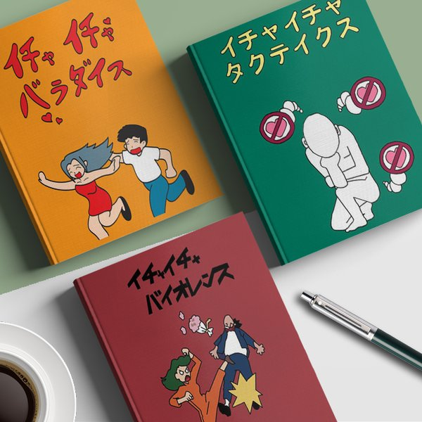

Icha Icha é uma série de romances mais vendidos escritos por Jiraiya. Kakashi Hatake é um grande fã da série.
Uma série de livros com o gênero romance, popular no mundo ninja e escrita para adultos. Tudo que se sabe sobre o enredo delas, é que foram baseados em suas experiências de rejeição no amor, ocasionada por Tsunade, onde os descrevia de uma forma cômica. Conta sempre a história de um romance entre um homem e uma mulher, sendo uma das suas experiências com Tsunade.